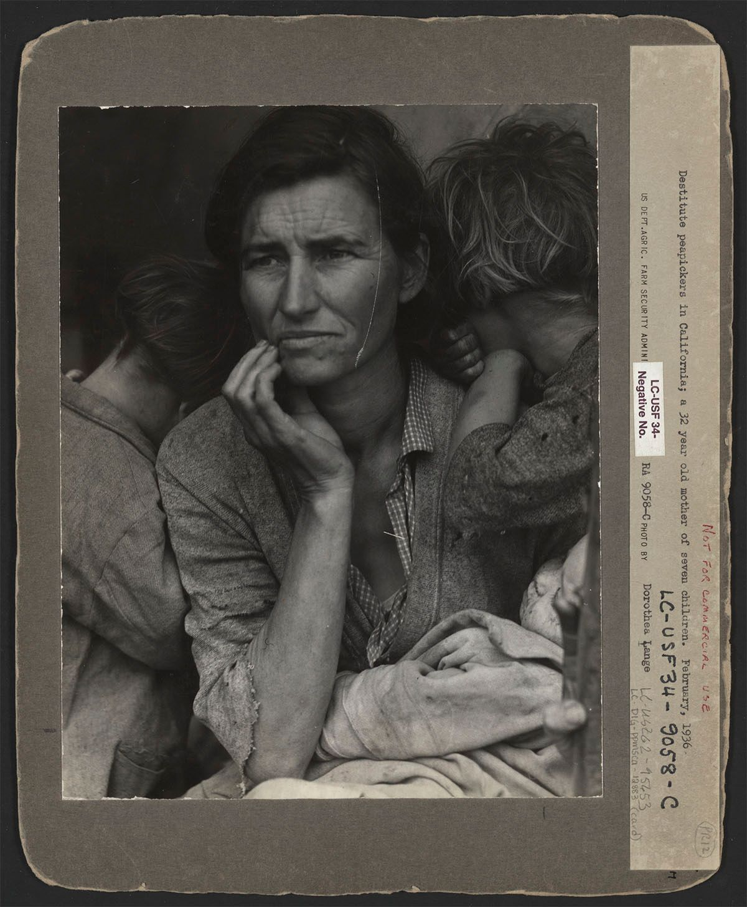

New Deal Photography
: The Works of Dorothea Lange and Walker Evans
Contributors: Judith Keller
In the 1930s, during America’s worst financial crises, the
administration of President Franklin D. Roosevelt employed
photographers to document the plight of everyday folk in the
Great Depression in order to push forward with their New Deal
programs. Documentary photographers Dorothea Lange and Walker
Evans were prolific frontrunners of these efforts and their
extraordinary photographs continue to endure today. Their
artistic and documentary mastery and historical importance
provide key insight into a monumental turning point in
American history.
New Deal Photography
New Deal Photography: The Works of Dorothea Lange and Walker Evans
Dorothea Lange had an extraordinary life and career as a
prolific photographer. She worked for Arnold Genthe in his
portrait studio in New York and studied photography with
Clarence White at Columbia University. In 1918 she began to
travel around the world to make her living as a photographer.
She found herself stranded in San Francisco, so she opened a
photographic studio there. Paul Taylor, who would become her
second husband, hired her to document migratory workers in
California.
Dorothea Lange, Resettlement Administration
photographer, in California, 1936.Library of Congress Prints and Photographs Division
In 1935 she began to work for the Resettlement Administration,
later known as the Farm Security Administration. During this
period, she made her most famous image,
Human Erosion in California (Migrant Mother), of Native American Florence Owens Thompson and her children
in a pea-pickers’ camp. Other less famous subjects included
Japanese internment camps and scenes of workers in factories
during World War II. Lange became the first woman awarded a
Guggenheim fellowship, and she spent nearly ten years making
photo essays for Life and other magazines. She also
traveled extensively, making photo essays in Vietnam, Ireland,
Pakistan, India, and elsewhere.
Walker Evans, profile, hand up to face,
1937.Library of Congress Prints and Photographs Division
Walker Evans began to photograph in the late 1920s, making
snapshots during a European trip. Upon his return to New York,
he published his first images in 1930. During the Great
Depression, Evans began to photograph for the Resettlement
Administration, later known as the Farm aecurity
Administration (FSA), documenting workers and architecture in
the Southeastern states. In 1936 he traveled with the writer
James Agee to illustrate an article on tenant farm families
for Fortune magazine; the book
Let Us Now Praise Famous Men came out of this
collaboration.
Throughout his career Evans contributed photographs to
numerous publications, including three devoted solely to his
work. In 1965 he left Fortune, where he had been a staff
photographer for twenty years, to become a professor of
photography and graphic design at Yale University. He remained
in the position until 1974, a year before his death.
Judith Keller,
Senior Curator of Photographs,
J. Paul Getty Museum
Excerpt from
Walker Evans: Catalogue of the Collection (1995) by
Judith Keller. Available for free download in its entirety,
in the Getty Publications
Virtual Library.
When Evans was officially hired in October 1935 as an
Information Specialist by the Historical Section of the
Resettlement Administration, his duties were described as
follows: “Under the general supervision of the Chief of the
Historical Section with wide latitude for the exercise of
independent judgement and decision as Senior Information
Specialist to carry out special assignments in the field;
collect, compile and create photographic material to
illustrate factual and interpretive news releases and other
informational material upon all problems, progress and
activities of the Resettlement Administration.”1
Evans was to make liberal use of his right to exercise
“independent judgement” during his time with the RA, and he
perpetually resisted the idea that his purpose there was to
gather illustrations for the promotion of the RA’s (that is,
the federal government’s New Deal) programs. While considering
a position with the RA in the spring of 1935, he jotted down
those things he would require of his employer, including the
“guarantee of one-man performance,” and what he would provide,
adding that he should not be asked to do anything more in the
way of political propaganda: “[I] Mean never [to] make
photographic statements for the government or do photographic
chores for gov or anyone in gov, no matter how powerful—this
is pure record not propaganda. The value and, if you like,
even the propaganda value for the government lies in the
record itself which in the long run will prove an intelligent
and farsighted thing to have done. NO POLITICS whatever.”
(Evans 1938Evans, Walker. American Photographs. New York:
Museum of Modern Art, 1938.)
https://youtu.be/BpGN0UUtqqUVideo 1A selection of Walker Evans photos from the across the
United States of America, 1930s.The J. Paul Getty Museum, Los Angeles
Because his pictures had been issued by the agency with
policy-approved captions for the past three years, Evans felt
the need in 1938 to distance himself from that establishment,
as well as the world of commercial publishing, by prefacing
American Photographs with this statement: “The
responsibility for the selection of the pictures used in this
book has rested with the author, and the choice has been
determined by his opinion: therefore they are presented
without sponsorship or connection with the policies, aesthetic
or political, of any of the institutions, publications or
government agencies for which some of the work has been
done.”2
Stryker’s business was to provide informative images to the
mass media, and he and Evans would always disagree about the
most appropriate vehicle for the latter’s photographs, as well
as the definition of “documentary.” But when the photography
project of the RA began, the two men were able to agree on its
primary subject: American history as exemplified by life in
the average American town. Evans’s vision for documenting
American life had begun to form much earlier; a letter drafted
to his friend Ernestine Evans, an editor at J. B. Lippincott,
in February of 1934, makes clear his aspirations:
What do I want to do? … I know now is the time for picture
books. An American city is the best, Pittsburgh better than
Washington. I know more about such a place. I would want to
visit several besides Pittsburgh before deciding. Something
perhaps smaller. Toledo, Ohio, maybe. Then I’m not sure a
book of photos should be identified locally. American city
is what I’m after… People, all classes, surrounded by
bunches of the new down-and-out. Automobiles and the
automobile landscape. Architecture, American urban taste,
commerce, small scale, large scale, the city street
atmosphere, the street smell, the hateful stuff, women’s
clubs, fake culture, bad education, religion in decay…3
The two men could find common ground in part due to the
widespread influence of the 1929 publication
Middletown: A Study in Modern American Culture by
Robert and Helen Lynd, professors of sociology at Columbia and
Sarah Lawrence, respectively. A 550-page field investigation
by social anthropologists with subject headings including
“What Middletown does to get its living” and “The houses in
which Middletown lives,” this pioneering project attempted an
objective analysis of life in a small Midwestern American city
(Muncie, Indiana). The Lynds’ study was hailed as a very
accessible report that was most appealing because it made “no
attempt to prove anything” but simply recorded “what was
observed.” The Lynds introduced their topic by saying their
goal “was to study synchronously the interwoven trends that
are the life of a small American city. A typical city,
strictly speaking, does not exist, but the city studied was
selected a shaving many features in common to a wide group of
communities.” (Lynd 1929, 3Lynd, Robert S., and Helen Merrell Lynd.
Middletown: A Study in American Culture San
Diego: Harcourt Brace Jovanovich, 1929; reprint,
Harvest/HBJ, 1956.)
Figure 1Walker Evans. [American Legionnaire],
1935.The J. Paul Getty Museum, Los Angeles
The “Outline Memorandum” that Evans prepared in October 1935,
probably at Stryker’s request, laying out plans for an
eight-week automobile trip through the Southeast, makes
reference to Middletown and presents thoughts similar to the
photographer’s musings of 1934:
First objective, Pittsburgh and vicinity, one week;
photography, documentary in style, of industrial subjects,
emphasis on housing and home life of working-class people…
Ohio Valley: rural architecture, including the historical,
contemporary “Middletown” subjects; Cincinnati [sic]
housing; notes on style of Victorian prosperous period…
Indiana, Kentucky, Illinois river towns, gather typical
documents, main streets, etc., in passing. Ditto Mississippi
river towns. Select one of these towns, such as Hannibal,
Missouri, for more thorough treatment, if time allows.4
Figure 2Walker Evans.
Sons of the American Legion, Bethlehem,
Pennsylvania, 1935.The J. Paul Getty Museum, Los Angeles
This document goes on to list antebellum plantation
architecture in Natchez, Mississippi; small rural French towns
in Teche Parish, Louisiana; industrial themes in Birmingham,
Alabama; and a cotton plantation in South Carolina, as
objectives of the proposed trip for gathering still
photography of a “general sociological nature.” In early 1936,
one of Middletown’s authors had a chance to directly
affect the RA’s Photography Section: Stryker showed Robert
Lynd, a former Columbia colleague, some RA pictures and asked
for his opinion while lunching with him in New York. The
result was a “shooting script” for “things which should be
photographed as American Background,” issued by Stryker to his
team of photographers. The script contains an extensive
listing of items like “People on and off the job,” “How do
people look?,” “The wall decoration in homes as an index to
the different income groups and their reactions,” and “A
photographic study of use of leisure time in various income
groups.”5
Figure 3Walker Evans.
Graveyard, Houses and Steel Mill, Bethlehem,
Pennsylvania, 1935; printed later.The J. Paul Getty Museum, Los Angeles
Once Evans was officially on staff, his first trip under
Stryker’s direction seems to have been an extended fall visit
to Bethlehem, Pennsylvania, where steel mills, workers’
housing, parading legionnaires, and elaborate gravestones (Figure 1,
Figure 2, and
Figure 3) were his subjects. Between November 1935 and April 1936,
Evans made two lengthy road trips that would account for the
bulk of his entire production for the RA and many of the 169
mid-thirties pictures that follow this essay. From November to
mid-January, here turned to industrial centers in
Pennsylvania, finally spending some time in Pittsburgh, and
went on to Ohio, Kentucky, Tennessee, Alabama, Mississippi,
and Louisiana, following to some extent the course outlined in
the memorandum above. In February 1936, he left again, with a
completely Southern itinerary that would take him through many
small cities, some of them renowned for ante-bellum
architecture and Civil War battles, in Louisiana, Mississippi,
Alabama, Georgia, Florida, the Carolinas, and Virginia.
In the spring of 1936, Stryker approved a furlough for Evans
to work on a Fortune story with James Agee. This
leave for mid-July through mid-September allowed Evans to
return to the “middle south” with Agee to prepare “an article
on cotton tenantry in the United States, in the form of a
photographic and verbal record of the daily lives and
environment of an average white family of tenant farmers” (Figure 4
and
Figure 5). (Agee 1941, viiiAgee, James, and Walker Evans.
Let Us Now Praise Famous Men: Three Tenant Families. Boston: Houghton Mifflin, 1941.) According to the terms of Stryker’s arrangement with
Fortune’s art editor, the pictures Evans produced on
this job would become the property of the RA after the
magazine had run the finished essay in a fall issue.
Figure 4Walker Evans.
Alabama Tenant Farmer Family Singing Hymns / The
Tengle Family, Hale County, Alabama, 1936.The J. Paul Getty Museum, Los AngelesFigure 5Walker Evans.
Floyd and Lucille Burroughs, Hale County,
Alabama, 1936.The J. Paul Getty Museum, Los Angeles
Once Evans returned from this trip south, during which he and
Agee documented the lives of the Burroughs, Fields, and Tengle
families in Alabama (see
Bud Fields with His Wife
and Burrough’s Family), he spent September and October printing his pictures and
preparing presentations for both Fortune and
Stryker.6
Stryker again talked about a New England trip, on which he
planned to accompany the photographer, but it did not
materialize, and Evans was once more sent to the South, this
time to photograph the catastrophe of flooding in Arkansas and
Tennessee. An unusual and demanding assignment for Evans, this
trip of late January and February 1937 was made with another
RA photographer, Edwin Locke, and required that he spend
considerable time in the affected area, photographing the
flood victims and their temporary shelters.
This would be his last travel for the RA, an agency that was
absorbed into the Farm Security Administration at about this
time. Evans’s contributions to the RA’s documentation of
Depression-era America had essentially been obtained between
the summer of 1935 and the spring of 1936, a period of less
than a year. The Alabama pictures made while on leave to
Fortune would become his best-known photographs and,
ironically, those most closely identified with his work as a
New Deal photographer.
Notes
Memorandum draft by Walker Evans, reproduced in
Walker Evans at Work, (New York: Harper and
Row, 1982), 112.
↩︎
Walker Evans to Ernestine Evans, unfinished two-page
letter in black ink on hotel stationery, dated Feb.
1934, first published in Walker Evans at Work,
98. This letter is part of the Evans Collection at the
Getty (JPGM84.XG.963.42).
↩︎
From a review by W. B. Shaw, quoted in
Book Review Digest: Books of l929 (New York: H.
W. Wilson, 1930), 591.
↩︎
Walker Evans to Roy Stryker, “Outline Memorandum,” ca.
Oct.1935, Stryker Papers. Also published in
Walker Evans at Work, 113.
↩︎
Roy Stryker to all FSA (then RA) photographers, outline
for “Suggestions recently made by Robert Lyndf or things
which should be photo-graphed as ‘American Background,’”
dated by Stryker to early 1936, first published in
Carver, Just Before the War, n.p.
↩︎
For more background on this Alabama series and a
discussion of two photograph albums in the collection of
the Prints and Photographs Division of the Library of
Congress thought to beEvans’s “first draft” for Fortune,
seeJudith Keller and Beverly Brannan, “Walker Evans: Two
Albums in the Library of Congress,”
History of Photography 19:1 (Spring 1995).
↩︎
Bibliography
Agee 1941
Agee, James, and Walker Evans.
Let Us Now Praise Famous Men: Three Tenant Families. Boston: Houghton Mifflin, 1941.
Evans 1938
Evans, Walker. American Photographs. New York:
Museum of Modern Art, 1938.
Lynd 1929
Lynd, Robert S., and Helen Merrell Lynd.
Middletown: A Study in American Culture San
Diego: Harcourt Brace Jovanovich, 1929; reprint,
Harvest/HBJ, 1956.
Catalogue
Dorothea Lange,
Human Erosion in California / Migrant Mother,
1936.The J. Paul Getty Museum, Los Angeles
Cat. 1. Human Erosion in California / Migrant Mother
The first publication of this renowned image occurred on
March 11, 1936, on the third day that the San Francisco
News ran a story about the pea pickers’ camp at Nipomo. It
was also featured as a full-page reproduction in September
1936 issue of Survey Graphic, titled
“Draggin’-Around People” and captioned “A blighted pea
crop in California in 1935 left the pickers without work.
This family sold their tent to get food.” Also in this
issue was an article by Taylor entitled “From the Group
Up.” His report on demonstration projects of the New
Deal’s Resettlement Administration in Arizona, Utah, New
Mexico, and California was illustrated with four more
picture by Lange.
Since it was first published, this composition, best known
as Migrant Mother, has come to represent not only
the pictorial archive created by the RA/FSA during the
1930s but also the Great Depression itself. Posters and
other publicity of later activists fighting racial,
economic, and political oppression have borrowed from
Lange’s icon of the time. The
handsome, androgynous face, the pose of stoic anxiety, and the encumbrance of
threeyoungchildren
proved to be universal attributes. With Lange’s artistry,
Owens took on the timeless quality of Eugéne Delacroix’s
strong female rebel (Liberty Leading the People),
Jean-François Millet’s peasant woman (the agrarian ideal),
Honoré Daumier’s laundresses (the working woman) and Käthe
Kollwitz’s proletarian woman warrior (one of the mothers
leading her Peasants’ War).
Owens, although she became famous, did not enjoy, even
momentarily, the life of a celebrity. She had three more
children and kept moving with her family, following the
California crops. She did become involved in efforts to
organize farm labor and would sometimes serve as the straw
boss, one who negotiates wages for migrants as the picking
season begins. She was still working in the fields at age
fifty before finally marrying again (to George Thompson)
and settling into a stable life in Modesto, California.
Several Lange images from the same photoshoot with Owens
and her children exist
in other collections. These give us the chance to consider the many varied
choices in composition that Lange made in producing her
iconic final image.

Figure 1.2This version of the print from the Library of
Congress Prints and Photographs Division is mounted on
paper board and includes an original FSA label. Note
too the thumb seen in the lower right corner. It is
also visible in the Getty‘s print, but Lange’s
negative was later retouched to remove the thumb and
in later prints, it is only a ghostly shadow.
Exhibitions
Tradition and Innovation: Recent Additions to the
Photographs Collection, the J. Paul Getty Museum at the Getty Center (Los
Angeles), June 20–October 8, 2000;
The Public Record: Photographs of the Great
Depression from the J. Paul Getty Museum, Pomona College Museum of Art (Claremont), March
10–May 19, 2002;
About Life: The Photographs of Dorothea Lange,
the J. Paul Getty Museum at the Getty Center (Los
Angeles), October 15, 2002–February 9, 2003;
Photographers of Genius, the J. Paul Getty
Museum at the Getty Center (Los Angeles), March 16–July
25, 2004; In Focus: The Worker, the J. Paul
Getty Museum at the Getty Center (Los Angeles), November
3, 2009–March 21, 2010;
Route 66: The Road and the Romance, Autry
National Center (Los Angeles), June 7–January 4, 2015.
Bibliography
Keller, Judith. About Life: The Photographs of Dorothea
Lange, exh. brochure (Los Angeles: The J. Paul Getty
Museum), cover; Keller, Judith.
In Focus: Dorothea Lange. Photographs from the J.
Paul Getty Museum.
(Los Angeles: J. Paul Getty Museum, 2002), p.33;
The J. Paul Getty Museum Handbook of the
Collections. 7th ed. (Los Angeles: J. Paul Getty Museum, 2007), p.
309, ill.
Walker Evans,
Bud Fields with His Wife Ivy, and His Daughter Ellen,
Hale County, Alabama, 1936.The J. Paul Getty Museum, Los AngelesWalker Evans,
Sharecropper’s Family, Hale County, Alabama / Bud Fields
and His Family, Hale County, Alabama / Bud Woods and His
Family, 1936.The J. Paul Getty Museum, Los AngelesWalker Evans, * [William Edward (Bud) Fields, A Cotton
Sharecropper, Hale County, Alabama]/[Bud Woods, Tenant
Farmer]*, 1936.The J. Paul Getty Museum, Los Angeles
Cat. 2. Bud Fields with His Wife Ivy, and His Daughter
Ellen, Hale County, Alabama
From mid-July to mid-September 1936, Evans took a leave
from his position as an information specialist for the
Historical Section of the Resettlement Administration to
work with the writer James Agee on an assignment for
Fortune magazine. They traveled to the Deep South
to prepare an article on tenant cotton farming. In Alabama
they documented the lives of farmers, including the Fields
family. Evans found in this average American household the
archetypal portrait of the everyman that he treasured. The
straight-forward style of this portrait emphasizes the
family’s hard life as much as their pride.
Table 1 Other Walker Evans Images from Hale County,
Alabama, 1936, in the J. Paul Getty Museum Collection
Title
Object Number
Link
Bed, Tenant Farmhouse, Hale County, Alabama /
Floyd Burrough's Bedroom, Hale County, Alabama
Walker Evans: An Alabama Record, the J. Paul
Getty Museum (Malibu), April 7–June 21, 1992;
In Focus: The Portrait, the J. Paul Getty
Museum at the Getty Center (Los Angeles), January
27–June 14, 2009.
Bibliography
Agee 1941
Agee, James, and Walker Evans.
Let Us Now Praise Famous Men: Three Tenant Families. Boston: Houghton Mifflin, 1941.
Evans 1938
Evans, Walker. American Photographs. New York:
Museum of Modern Art, 1938.
Lynd 1929
Lynd, Robert S., and Helen Merrell Lynd.
Middletown: A Study in American Culture San
Diego: Harcourt Brace Jovanovich, 1929; reprint,
Harvest/HBJ, 1956.
Contributors
Judith Keller
Judith Keller joined the J. Paul Getty Museum in 1986
and since 2008 was an Associate Curator of
Photographs. In 2010, she was named the Senior Curator
of Photographs. Keller received her B.A. in Art
History and a Masters in Museum Practice and Art
History from the University of Michigan at Ann Arbor.
She also completed course work for a Phd. in Art
History at the University of Michigan. Prior to her
tenure at the Getty, Keller worked at The University
of Michigan Museum of Art (1979 – 1981) and at the
Archer M. Huntington Art Gallery (now the Blanton
Museum of Art) at The University of Texas, Austin, as
Curator of Prints and Drawings.